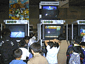
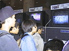

|
|
「ゼルダの伝説 時のオカリナ」
お待たせしました「ゼルダの伝説」！あのリンクをロクヨンで実際にプレイしていただくことができました。
こどもリンクのアクションや、初公開のゼルダ姫＆ガンドロフの画像など、話題満載。リアルな不気味さの敵キャラたちも、
印象に残ったことと思います。
「時のオカリナ」を吹くリンクの姿もお忘れなく。
|
|

|
「ヨッシーストーリー」
もうすぐ発売の「ヨッシーストーリー」を一足早くプレイして頂きました。
カラフルなちびヨッシーが大活躍する楽しいアクションゲーム、おなじみヨッシーの"とっつきやすさ"もあってか、皆さんコントローラ操作もすぐに慣れていただいたようです。
さらに話題の美しいグラフィックは、ゲームのページがめくられるたび、驚きの声とともに次々と公開されていきました。
|
|

|
「F-ZWRO X（仮称）」
余計な説明ナシに、どなたにもド迫力のレーシングを体験していただいた「F-ZERO X」。
ジェットコースター顔負けのユニークなサーキットで繰り広げられる猛スピードの真剣バトル。"走る"というより"飛ぶ"イメージに近い興奮レース
に、挑戦した方々はご満足されたのではないでしょうか?
|
|
|
「テン・エイティ スノーボーディング」
これからの季節にピッタリの「テン・エイティ スノーボーディング」!
リアルな銀世界を舞台にした、話題のスノーボードゲームです。ちなみに「テン・エイティ」とは、3回転ジャンプを指す技の名前。
単に滑ってスピードを競うだけでなく、華麗な技(トリック)を次々と披露することもできるこのゲーム。どうぞお楽しみに!
|
|
|
「NBAバスケットボール（仮称）」
NBAの白熱の試合をリアルに再現できる正統派バスケットゲーム、「NBAバスケットボール」も初お目見えしました。
3Dスティックならではの、プレイヤーの微妙な指の動きを読み取ったアクションで、どの選手もまるで生きているようにプレイヤーの指示どおり
動きます。豪快なダンクシュートはもちろん、ドリブルなど繊細さが要求されるテクニックにもご期待ください。
|
|
|
「ディディーコングレーシング」
もうテレビコマーシャルでおなじみ「ディディーコングレーシング」。
あの可愛くて個性的なキャラクターたちによる、空・海・陸どこでもOKの猛レースに、皆さん熱中されていました。
同じコースでも飛行機でいくか、ホバークラフトにするか、レースカーを使うか、ビークル(乗り物)次第で展開も全く変わる楽しさで、アッと
言う間にプレイ時間が終わってしまったのではないでしょうか?
|
|
|
「バンジョー＆カズーイの冒険」
アメリカではすでに公開されている「バンジョーとカズーイの冒険」を、日本のゲームファンの方々にもお楽しみいただきました。
会場での説明にあたった女性は青いリュックと黄色いズボンで、すっかりバンジョー気分。
オープニング画面では、得意の楽器を演奏する陽気なバンジョーとカズーイ、そして仲間たち。もちろん実際のゲーム内容もとってもあかるいアクションゲームです!
|